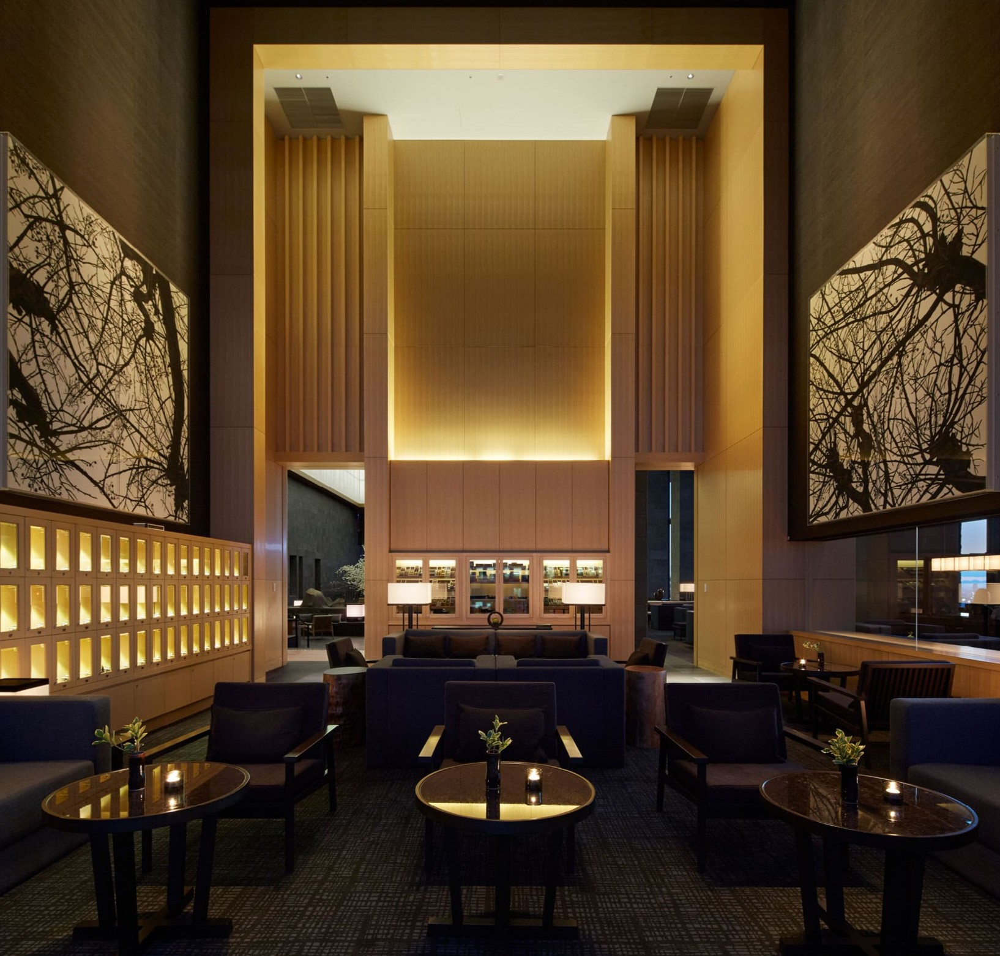
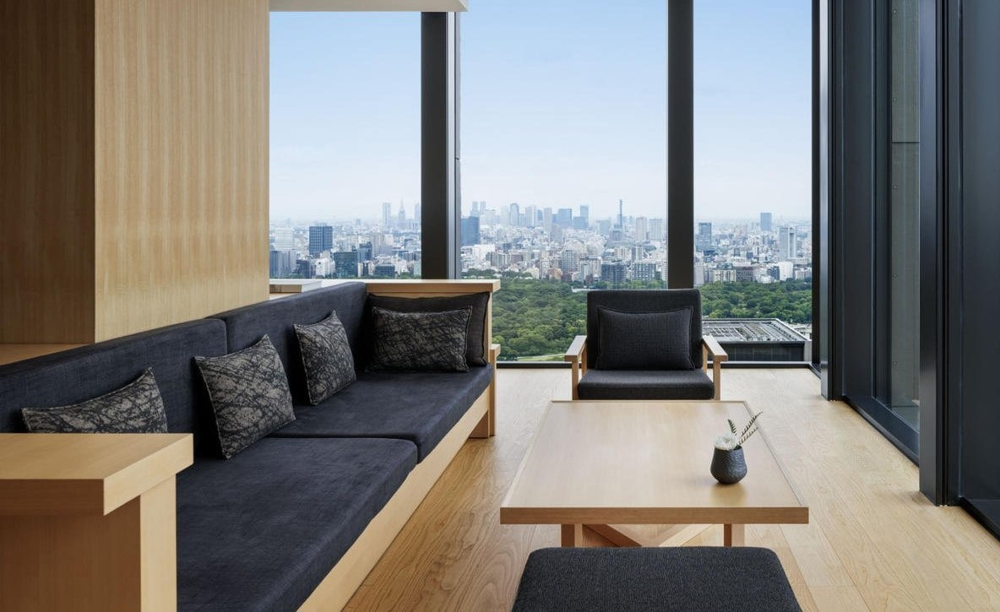
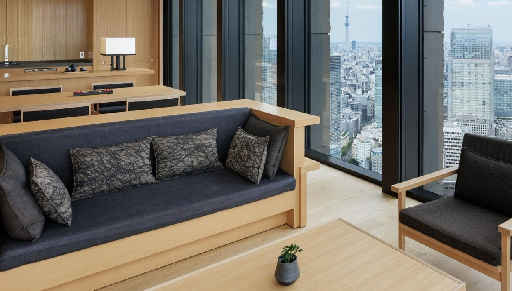

Aman Tokyo

From the heights of the Otemachi Tower, Aman Tokyo tempers urban dynamism with a profound atmosphere of serenity. Inspired by Japanese design tradition, with ikebana displays, washi paper doors and engawa platforms, the vast lobby, ryokan-style rooms and Aman Spa are all among the city's largest.
Aman Tokyo's Suites and Signature Suites are elevated urban sanctuaries drawing design inspiration from traditional Japanese residences. Perched high above the bustling city below, they blend wood, washi paper and granite with modern technology and sumptuous fabrics for an unparalleled stay in Tokyo. Each Suite offers a dynamic view of the city, some offering incredible vistas over the Imperial Palace Gardens with magnificent Mount Fuji appearing on the horizon on clearer days.
Our most recommended stays
- Aman Suite
- Panorama Suite
Aman Suite

At 157 square metres (1,689 square feet) in size, Aman Suites are the hotel's largest offering unparalleled urban living. Positioned on the building's northwest corner, they offer exceptional panoramas of the Japanese capital, including the skyscrapers of Shinjuku, the Imperial Palace gardens and on clearer days, Mount Fuji on the horizon. The suites feature large bedrooms with king-sized beds and a separate living spaces, additional powder rooms and dining tables for up to six guests, ideal for entertaining.
Meanwhile, a desk and workspace can be configured as an extension to the room or concealed for privacy via a sliding pocket door. Through elegant shoji screens, a large bathroom with stone furo tub also enjoys remarkable views, alongside separate vanities.
Amenaties included are...
- Aman Tokyo's largest Suites
- Bedroom with king-size bed
- Additional half bathroom
- Wi-Fi, TV, sound system, safety box
- Unrivalled city views, including the Imperial Palace gardens and Mount Fuji
- Customisable workspace
- Personal bar and mini wine cellar
- Spacious separate living room with daybed and dining table for six
- Large bathroom with traditional furo tub
- Shoji and yukimi shoji screens
Panorama Suite

139 square metres (1,497 square feet) in size, Panorama Suites are ideal for guests seeking exceptional views and an abundance of space. Their location on the Otemachi Tower's corners offers spectacular dual aspect vistas through floor-to-ceiling windows, which frame the Tokyo Tower and other city icons.
Features include a separate bedroom, living and dining area seating four, alongside a large bathroom with stone furo tub and separate vanities accessed through elegant shoji sliding doors. A separate powder room, concealable workspace and lofty entranceway makes the Panorama Suite suitable for both business and leisure travellers alike.
Amenaties included are...
- Aman Tokyo's largest Suites
- Bedroom with king-size bed
- Additional half bathroom
- Wi-Fi, TV, sound system, safety box
- Unrivalled city views, including the Imperial Palace gardens and Mount Fuji
- Customisable workspace
- Personal bar and mini wine cellar
- Spacious separate living room with daybed and dining table for six
- Large bathroom with traditional furo tub
- Shoji and yukimi shoji screens